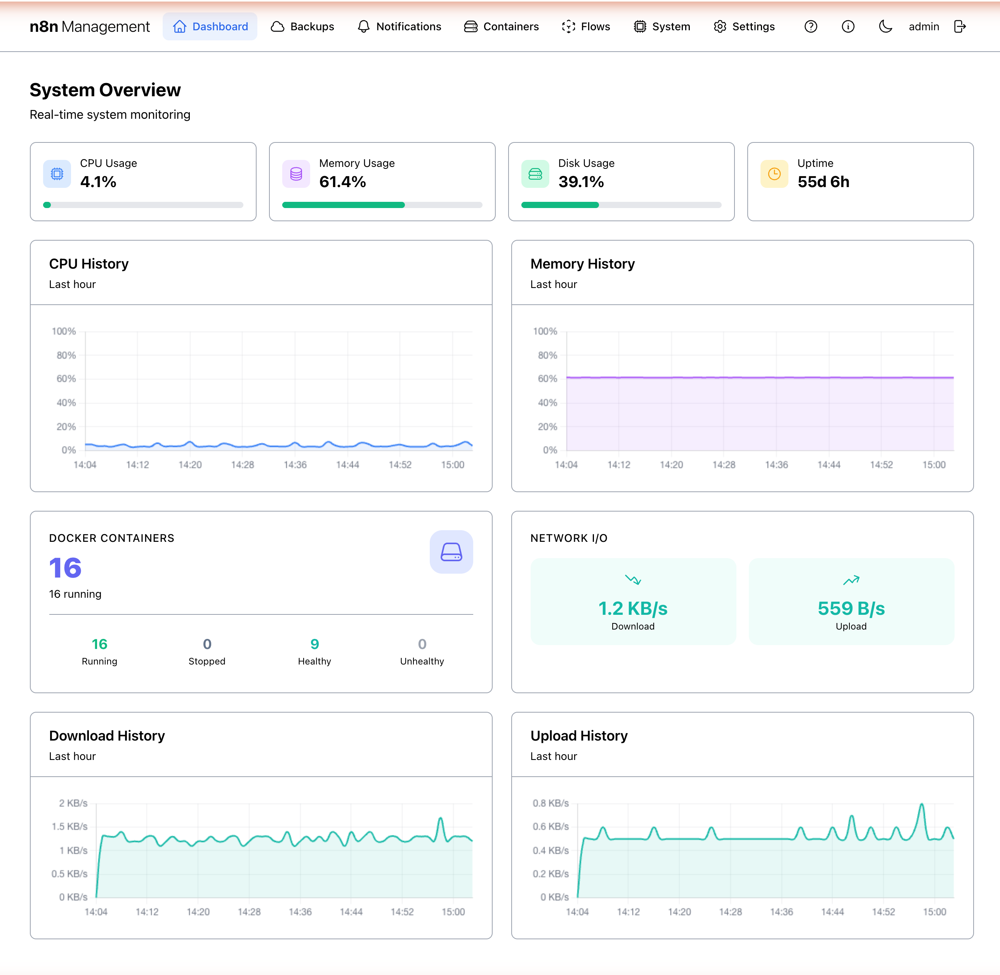
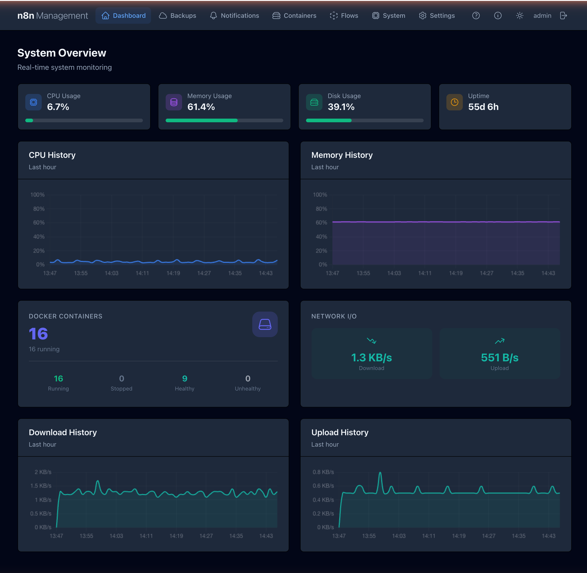
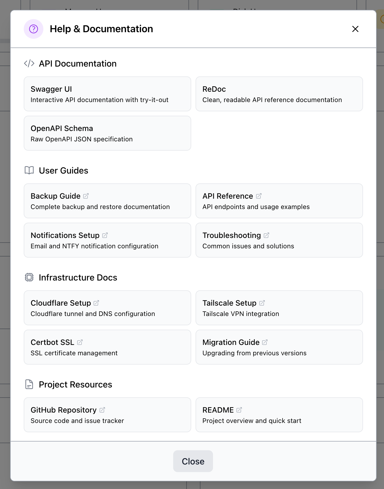
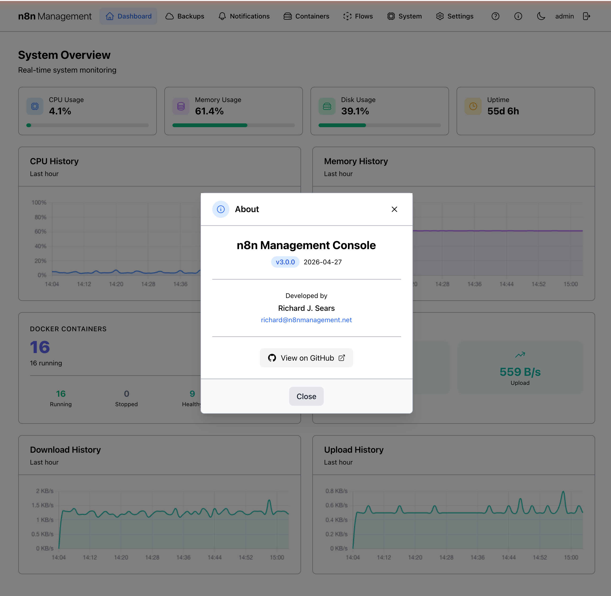

Dashboard
The Dashboard is the home view after login. It surfaces the most-needed at-a-glance information about your n8n stack: real-time resource usage, history charts, container status, and network throughput. Use it as a starting point — drill into any section via the top navigation.
Overview
The Dashboard renders a single-screen "System Overview" panel: a row of four stats cards along the top (CPU, Memory, Disk, Uptime), CPU and Memory history charts below them, then a Docker Containers panel and a Network I/O panel, and finally Download / Upload history charts at the bottom.

The header bar
The header is consistent across every page in the management console. It provides primary navigation and four utility actions in the top-right. You can see it at the very top of Figure 1 above.
Sections (left to right)
| Item | Behavior |
|---|---|
| n8n Management logo | Click to return to the Dashboard from any page. |
| Dashboard / Backups / Notifications / Containers / Flows / System / Settings | Top-level section links. The active section is highlighted. |
| ❓ Help & Documentation | Opens the Help modal — see below. |
| ℹ️ About | Opens the About modal — see below. |
| 🌙 / ☀️ Theme toggle | Switches between light and dark themes — see Light & dark themes. |
| Username | Displays the currently logged-in user. Not interactive. |
| ↪ Logout | Ends the current session and returns to the login screen. |
Stats cards
The top row shows four real-time metric cards: CPU Usage, Memory Usage, Disk Usage, and Uptime. The first three render a percentage value with a horizontal progress bar that fills proportionally to current load; the fourth shows total host uptime since last reboot, formatted as days and hours.
History charts
Two pairs of line charts (CPU/Memory above, Download/Upload below) plot the corresponding metric over the last hour. Each data point is a sampling captured by the n8n_status data collector. The X-axis is time (HH:MM), the Y-axis is the metric value with appropriate units.
On a healthy host, CPU stays under 20% with brief spikes during workflow execution. Memory plots a relatively flat line. Network throughput is bursty — quiet for long stretches with sudden spikes during backups or webhook traffic.
Docker containers
The Docker Containers panel surfaces the count and health of every container the management console can see. The big number on the top-left is the total running count; below it, four sub-stats break the population down by state.
Sub-stat behavior
| Sub-stat | Meaning | On click |
|---|---|---|
| Running | Containers in running state. | Jumps to Containers filtered by running state. |
| Stopped | Containers in exited or stopped state. | Jumps to Containers filtered by stopped state. |
| Healthy | Containers reporting healthy from their Docker healthcheck. | Jumps to Containers filtered by healthy. |
| Unhealthy | Containers reporting unhealthy or with a failing healthcheck. | Jumps to Containers filtered by unhealthy. Investigate immediately. |
Network I/O
Real-time download and upload throughput for the host's primary interface, with current values shown alongside the live history charts at the bottom of the dashboard. Throughput is shown in human-readable units (B/s, KB/s, MB/s as appropriate). Values update every few seconds.
Light & dark themes
The third icon button in the top-right corner of the header toggles between light and dark themes. The choice is persisted to your browser's local storage and survives navigation, refresh, and re-login.

Help & Documentation
The Help button (❓ icon, fourth from left in the top-right group) opens a modal with curated links to API documentation, user guides, infrastructure docs, and project resources. Every link opens in a new browser tab.

What's linked
| Group | Link | Goes to |
|---|---|---|
| API Documentation | Swagger UI | Interactive API explorer with try-it-out |
| ReDoc | Clean, readable API reference | |
| OpenAPI Schema | Raw OpenAPI JSON specification | |
| User Guides | Backup Guide | Backup and restore documentation |
| API Reference | API endpoints and usage examples | |
| Notifications Setup | Email and NTFY configuration | |
| Troubleshooting | Common issues and solutions | |
| Infrastructure Docs | Cloudflare Setup | Cloudflare tunnel and DNS configuration |
| Tailscale Setup | Tailscale VPN integration | |
| Certbot SSL | SSL certificate management | |
| Migration Guide | Upgrading from previous versions | |
| Project Resources | GitHub Repository | Source code and issue tracker |
| README | Project overview and quick start |
To close the modal, click Close at the bottom, click outside the modal area, or press Esc.
docs/manual/. The API Documentation links (Swagger UI, ReDoc, OpenAPI Schema) will continue to point to the live FastAPI-generated endpoints since those are dynamic.About
The About button (ℹ️ icon, fifth from left in the top-right group) opens a modal showing the management console version, build date, developer credit, and a link to the GitHub project.

Refresh behavior
Every card on the Dashboard auto-refreshes at a configurable interval (default: 30 seconds). There is no explicit "Refresh" button on the Dashboard — data is always live within the auto-refresh window.
The auto-refresh interval is set globally and applies across all sections of the management console. To change it, see Settings.